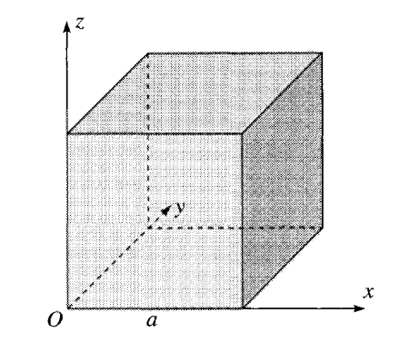
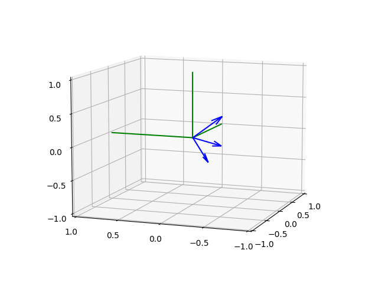
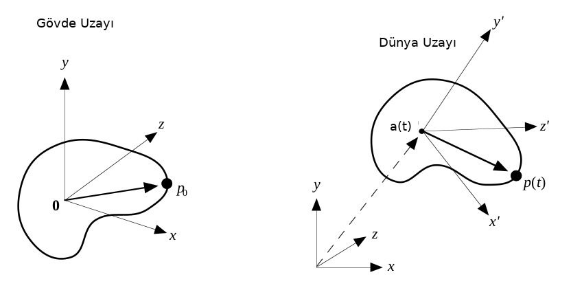

Bir objenin havaya fırlatıldığını düşünelim, fırlatma sırasında dönüş te var, çetrefil bir hareket sözkonusu yani. Fakat şimdiye kadar gördüğümüz teknikler ile hala bu hareketi analiz edebiliriz, hem lineer momentum, hem de açısal momentum kütle merkezi odaklı olarak analiz edilebiliyor. Herhangi bir katı gövde, cisim şeklini ve hareketi analiz için şimdi bazı genel formülleri ortaya koyalım.
Gövdenin açısal momentumu $L$ için [1, sf. 379],
$$ L = \sum m_i r_i \times v_i $$
ki $L,r,v$ vektör. $v = \omega \times r$ eşitliğini üste sokarsak,
$$ L = \sum m_i r_i \times (\omega \times r_i) \qquad (1) $$
Şimdi bu son ifadenin her vektörü öğelerini kullanarak açılımını yapalım böylece başka bir forma erişmeyi umuyoruz. $\omega = [\begin{array}{ccc} \omega_x&\omega_y&\omega_z \end{array}]^T$ ve $r = [\begin{array}{ccc} x&y&z \end{array}]^T$ öğelerini kullanacağız, ve üstteki formülün $A \times (B \times C)$ formunda olduğunu farkediyoruz, o zaman genel bir $r \times (\omega \times r)$ üzerinde BAC-CAB açılımı yapmayı deneyebiliriz, bu açılım hatırlarsak,
$$ A \times (B \times C) = B(A \cdot C) - C(A \cdot B) $$
idi. Kendi denklemimiz üzerinde bu açılım
$$ r \times (\omega \times r) = \omega (r \cdot r) - r(r \cdot \omega) $$
şeklinde olacaktır. Açılımı yapınca 3 x 1 boyutunda bir vektör elde ediyoruz onun sadece ilk öğesine, $x$ için olan durumuna bakalım,
$$ r \times (\omega \times r)_x = \omega_x (x^2 + y^2 + z^2) - x(\omega_x x + \omega_y y + \omega_z z) $$
$\omega_x x^2$ iki yerden iptal olur, kalanlar,
$$ = \omega_x ( y^2 + z^2) - \omega_y xy + \omega_z xz $$
Her üç öğe için açılım yapınca,
$$
r \times (\omega \times r) =
\left[\begin{array}{c}
(y^2 + z^2) \omega_x - xy \omega_y - xz \omega_z \\
-yx \omega_x + (z^2 + x^2)\omega_y - yz \omega_z \\
-zx \omega_x - zy \omega_y + (x^2+y^2)\omega_z
\end{array}\right]
$$
Ve ana formülde $m_i$ çarpımı olduğunu unutmayalım,
$$
m r \times (\omega \times r) =
\left[\begin{array}{c}
m (y^2 + z^2) \omega_x - m xy \omega_y - m xz \omega_z \\
-m yx \omega_x + m (z^2 + x^2)\omega_y - m yz \omega_z \\
-m zx \omega_x - m zy \omega_y + m (x^2+y^2)\omega_z
\end{array}\right]
$$
Ustteki sonucu (1)'e sokunca, ve notasyonel olarak bazı rahatlıklar düşünerek, mesela $I_{xx} = \sum_i m_i (y_i^2 + z_i^2)$ gibi, ya da $I_{xy} = - \sum_i m x_i y_i$. Bunları da yerine koyunca, $L_x,L_y,L_y$ diyelim,
$$ L_x = I_{xx} \omega_x + I_{xy} \omega_y + I_{xz} \omega_z $$
$$ L_y = I_{yx} \omega_x + I_{yy} \omega_y + I_{yz} \omega_z $$
$$ L_z = I_{zx} \omega_x + I_{zy} \omega_y + I_{zz} \omega_z $$
Fakat bu son sonuç hala biraz sadeleştirilebilir. İfadeye bakarsak onu bir matris çarpı bir vektör çarpımı ile temsil edebiliriz gibi geliyor, hakikaten de
$$ I = \left[\begin{array}{ccc} I_{xx} & I_{xy} & I_{xz} \\ I_{yx} & I_{yy} & I_{yz} \\ I_{zx} & I_{zy} & I_{zz} \end{array}\right], \quad \omega = \left[\begin{array}{c} \omega_x \\ \omega_y \\ \omega_z \end{array}\right] $$
üzerinden $I \omega$ çarpımının (2) sonucunu vereceğini görebiliriz. Böylece gayet sade
$$ L = I \omega $$
ifadesine geri gelmiş olduk.
$I$, atalet matrisidir, ve her katı kütle şekline göre farklı olacak bir matristir. O zaman bir objenin açısal momentumunun nasıl olacağını hesaplamak için önce o objenin atalet matrisine hesaplamak gerekir.
Ataletin Ana Eksenleri (Principal Axes of Inertia)
Bir konu daha var tabii; dikkat edersek $I$ matrisini çekip çıkardığımız hesap bir $O$ referansını merkez alıyordu. "Genel bir $O$ olsun" dedik ve oradan türetmeye devam ettik. Fakat bazı referansların, yani dönüşün neyin etrafında olduğunun, her seçime göre farklı $I$'lara sebebiyet verebileceğini görmek gerekir. Lineer cebirsel olarak $L$ ile $\omega$'nin aynı yönü göstermesi için $I$'nin köşegen matris olması gerekir. Fakat elde köşegen matris olmasa da $\omega$'yi bizim değiştirerek, aynı refarans $O$'dan geçen ama farklı öyle bir yönü göstermektir ki, bu eksen etrafında bir köşegen $I$ elde edilsin ve hareket simetrik hale gelsin.
Bu hesap için özdeğer, özvektör hesabını yapmak lazım, ya da atalet matrisinin köşegenleştirilmesini [2] (diagonalization) gerçekleştirmek lazım. Eğer $I$ köşegen değil ise, öyle bir $\omega$ bulalım ki $L = I \omega$ hesabındaki $L$, $I \omega$ ile aynı yönü göstersin, yani
$$ I\omega = \lambda \omega $$
haline gelsin. Bu bir özdeğer problemi değil midir? Evet.
Örnek olarak [1, sf. 382]'deki $O$ etrafında dönen küp orneğini kullanalım,

Bu referansa göre atalet matrisi
$$ I = \left[\begin{array}{rrr} 8 & -3 & -3 \\ -3 & 8 & -3 \\ -3 & -3 & 8 \end{array}\right] $$
olarak bulunmuş. Görüldüğü gibi $I$ köşegen değil. Kosegenlestirmek icin,
import numpy.linalg as lin
I = np.array([[8, -3, -3],
[-3, 8, -3],
[-3, -3, 8]])
e,evec = lin.eig(I)
print (e)
print (evec)
print (evec[:,0])
[11. 2. 11.]
[[ 0.81649658 -0.57735027 0. ]
[-0.40824829 -0.57735027 -0.70710678]
[-0.40824829 -0.57735027 0.70710678]]
[ 0.81649658 -0.40824829 -0.40824829]
Demek ki yeni $I$ matrisi
$$ I = \left[\begin{array}{rrr} 11 & 0 & 0 \\ 0 & 2 & 0 \\ 0 & 0 & 11 \end{array}\right] $$
olmalı.
Üç tane $\omega$ vektörü elde edildi, bunlar tabii ki birbirine dik, hepsini grafikleyelim, yeşil çizgiler $x,y,z$ eksenleri olmak üzere,
from mpl_toolkits import mplot3d
def plot_vector(fig, orig, v, color='blue'):
ax = fig.gca(projection='3d')
orig = np.array(orig); v=np.array(v)
ax.quiver(orig[0], orig[1], orig[2], v[0], v[1], v[2],color=color)
ax = fig.gca(projection='3d')
return fig
fig = plt.figure()
axes = mplot3d.Axes3D(fig)
SCALE = 0.5
plot_vector(fig, [0,0,0],evec [:,0]*SCALE)
plot_vector(fig, [0,0,0],evec [:,1]*SCALE)
plot_vector(fig, [0,0,0],evec [:,2]*SCALE)
axes.view_init(elev=10, azim=200)
axes.set_xlim(-1,1)
axes.set_ylim(-1,1)
axes.set_zlim(-1,1)
axes.plot([0,1],[0,0],[0,0],color = 'g')
axes.plot([0,0],[0,1],[0,0],color = 'g')
axes.plot([0,0],[0,0],[0,1],color = 'g')
axes.locator_params(tight=True, nbins=4)
plt.savefig('phy_005_basics_04_02.png')

Rotasyon Matrisi ve Türevi
Bir 3 x 3 dönüş matrisi ile herhangi bir vektörü döndürebileceğimizi biliyoruz. Yersel taşıma daha da basit, 3 boyutlu bir vektör sadece, mevcut konuma ekleyerek yeni konumu elde ediyoruz.
Bir katı gövdeyi parçacıkları üzerinden alırsak, ve bu gövdenin açısal dönüşsel olarak hangi yöne baktığını bir dönüş matrisi $R$ ile temsil edersek, her parçacık üzerinde bu işlemin uygulandığını düşünebiliriz. Ayrıca konumsal taşınma ve bakılan yön başlangıçtaki bir "gövde uzayı"na (body space) göre yapılabilir, gövdenin kütle merkezini dünya kordinatlarının (0,0,0) orijin noktasında ve yönü herhangi bir (başta belli) yöne doğru alalım, hareketler hep bu konuma referansla, onu değiştirecek şekilde düşünülebilir. Mesela gövde üzerindeki, gövde uzayındaki, herhangi bir $p_0$ noktasını düşünelim, $t$ anında bu noktanın dünya uzayındaki konumu
$$ p(t) = R(t) p_0 + \chi(t) $$
ki $\chi(t)$ bir yersel taşınma, ve $R(t)$ açısal dönüş. Tabii taşınma her zaman kütle merkezine uygulandığı için $a(t)$ aynı zamanda kütle merkezinin her $t$ anında dünya uzayında olduğu yeri de gösteriyor.

Türeve gelirsek, bir vektör $r$'nin orijin etrafında döndüğünü düşünelim. Herhangi bir anda bu dönüşün açısal hızı $\omega$ çapraz çarpımla hesaplanabilir,
Hız tabii ki sonsuz küçük zamandaki yer değişimi olduğu için onu
$$ \frac{\mathrm{d} r}{\mathrm{d} t} = \omega \times r $$
olarak ta görebiliriz. Şimdi bir katı gövdeyi düşünelim, onun baktığı yön (orientation) bir matris $R$ içinde. Bu matrisin her kolonunda bir eksen var, ilk kolon $x$, ikinci $y$, vs. Eğer gövdenin baktığı yönü $R$ ile temsil ediyorsak tüm bu kolonlar gövde dönerken değişecektir. Eğer dönüş $\omega$ ise her eksenin açısal hızı $\omega$ demek, o zaman bu eksenlerin, $b,c,d$ diyelim, açısal hızı ayrı ayrı $\omega \times b$, $\omega \times c$, $\omega \times d$ olarak bulunabilir, ki bunların her biri aynı zamanda ayrı birer türevdir. Tüm matrisin türevi
$$ \frac{\mathrm{d} R}{\mathrm{d} t} = \tilde \omega \cdot R $$
ki $\tilde \omega$ ile $\omega$'yi eksi bakışımlı [4] bir matris hale getirdik, böylece çapraz çarpımı noktasal çarpım haline çevirmiş oluyoruz [5, sf. 9], [3].
Atalet Matrisi ve Dönüşler
Daha önce atalet matrisi $I(t)$'yi görmüştük,
$$ I(t) = \sum \left[\begin{array}{ccc} m_i (y_i^2 + z_i^2) & -m_i x_i y_i & m_i x_i z_i \\ -m_i y_i x_i & m_i (x_i^2 + z_i^2) & -m_i y_i z_i \\ -m_i z_i x_i & -m_i z_i y_i & m_i (x_i^2 + y_i^2) \end{array}\right] $$
Burada $x,y,z$ değerleri gövde uzayında, her nokta $r_i'$ için $x_i,y_i,z_i$ değerleri $r_i - \chi(t)$ içeriğiyle hesaplanıyor. Ayrıca bir obje dönerse, onun belli noktalarının eksenden olan uzaklıkları değişir ve farklı bir $I$ elde ederiz... fakat üstteki hesabı obje hareket ederken sürekli yapmak oldukca külfetlidir. Acaba $I$'nin bir baz kısmını hesaplasak, sonra dönüşe göre onu güncellesek olmaz mı?
Bunun bir yolu var [5, sf. 14]. $r_i'^T r_i' = x_i^2 + y_i^2 + z_i^2$ olduğundan hareketle, önceki $I$ denklemini şu şekilde yazabiliriz,
$$ I(t) = \sum m_i r_i'^T r_i' \left[\begin{array}{ccc} 1 & 0 & 0 \\ 0 & 1 & 0 \\ 0 & 0 & 1 \end{array}\right] - \left[\begin{array}{ccc} m_i x_i^2 & -m_i x_i y_i & m_i x_i z_i \\ -m_i y_i x_i & m_i y_i^2 & -m_i y_i z_i \\ -m_i z_i x_i & -m_i z_i y_i & m_i z_i^2 \end{array}\right] $$
Simdi en sağdaki matrise dikkat edelim, onu bir dış çarpım (outer product) olarak temsil edebiliriz, alttaki gibi,
$$ r_i' r_i'^T = \left[\begin{array}{c} x_i \\ y_i \\ z_i \end{array}\right] \left[\begin{array}{ccc} x_i & y_i & z_i \end{array}\right] = \left[\begin{array}{ccc} x_i^2 & x_i y_i & x_i z_i \\ y_i x_i & y_i^2 & y_i z_i \\ z_i x_i & z_i y_i & z_i^2 \end{array}\right] $$
Bunu kullanarak ve 3 x 3 boyutlu birim matrisini $\overline{1}$ ile göstererek (normalde bu matris için $I$ notasyonu kullanılır ama o hard bu yazıda kapılmış durumda),
$$ I(t) = \sum m_i ((r_i'^T r_i') \overline{1} - r_i' r_i'^T) $$
Bu nasıl faydalı? Çünkü $r_i(t) = R(t) r_{0i} + \chi(t)$ ki $r_{0i}$ başlangıçtaki kütlede $i$ parçacığınin yeri, ve sabit, o zaman
$$ r_i(t) - \chi(t) = R(t) r_{0i} = r_i'(t) $$
Şimdi $r_i'(t) = R(t) r_{0i}$ eşitliğini iki üstteki formülde kullanırsak,
$$ I(t) = \sum m_i ( (R(t) r_{0i})^T (R(t) r_{0i}) \overline{1} - (R(t) r_{0i}) (R(t) r_{0i})^T ) $$
$$ = \sum m_i ( r_{0i}^T R(t)^T R(t) r_{0i} \overline{1} - R(t) r_{0i} r_{0i}^T R(t)^T ) $$
$R(t)$ dikgen, ortonormal matris oldugu icin $R(t)^TR(t) = \overline{1}$
$$ = \sum m_i ( (r_{0i}^T r_{0i}) \overline{1} - R(t) r_{0i} r_{0i}^T R(t)^T ) $$
Üstteki formülde ikinci terimde $R(t) .. R(t)^T$ ifadesi var, bunu birinci terime de eklemek için, ve $r_{0i}^T r_{0i}$ bir tek sayı değer olduğu için ve $R(t) R(t)^T$'nin birim matris olmasından hareketle,
$$ = \sum m_i ( R(t) (r_{0i}^T r_{0i}) R(t)^T \overline{1} - R(t) r_{0i} r_{0i}^T R(t)^T ) $$
Böylece $R(t)$ ve $R(t)^T$ dışarı çekilebiliyor,
$$ = R(t) \left( \sum m_i (( r_{0i}^T r_{0i}) \overline{1} - r_{0i} r_{0i}^T \right) R(t)^T $$
Böylece parantez içindeki, $I_{body}$ denebilecek değerler parçacıkların gövdenin ilk konumundaki yerlerine (ve değişmeyen kütle $m_i$ değerine) göre hesaplanabileceği için, onu bir kez hesaplayabiliriz, ve sonra ona $R(t)$'leri uygulayarak istediğimiz güncel $I(t)$ değerini elde ederiz [5, sf. 15].
$$ I(t) = R(t) I_{body} R(t)^T $$
$I$'nin tersi $I_{body}^{-1}$ de gerekli (niye birazdan göreceğiz) fakat bu hesap ta başta hesaplanıp depolanabilir, çünkü
$$ I^{-1} = ( R(t) I_{body} R(t)^T )^{-1} $$
$$ (R(t)^T)^{-1} I_{body}^{-1} R(t)^{-1} $$
$$ = R(t) I_{body}^{-1} R(t)^T $$
$R(t)^T = R(t)^{-1}$ ve $R(t)^T = R(t)$ olduğunu hatırlayalım çünkü $R(t)$ orthonormal, dikgen bir matris.
Hareketin Katı Gövde Denklemleri
Artık elimizde bir gövdenin her bakımdan konumunu, statüsünü temsil etmek için yeterli matematik var. Bu konumu $\overline{X}(t)$ ile gösterebiliriz,
$$ \overline{X} = \left[\begin{array}{c} \chi(t) \\ R(t) \\ P(t) \\ L(t) \end{array}\right] $$
Momentum $P(t) = v(t) M$ olduğu için $v(t) = \frac{P(t)}{M}$.
$I(t)$'yi yukarıda gördük, $I(t) = R(t) I_{body} R(t)^T$.
$L(t) = I(t) \omega(t)$ olduğu için $\omega(t) = I(t)^{-1} L(t)$
Hepsini biraraya koyunca $\overline{X}$'nin türevi
$$ \frac{\mathrm{d}}{\mathrm{d} t} \overline{X}(t) = \frac{\mathrm{d}}{\mathrm{d} t} \left[\begin{array}{c} \chi(t) \\ R(t) \\ P(t) \\ L(t) \end{array}\right] = \left[\begin{array}{c} v(t) \\ \tilde \omega \cdot R(t) \\ F(t) \\ \tau(t) \end{array}\right] $$
[devam edecek]
Kaynaklar
[1] Taylor, Classical Mechanics
[2] Bayramlı, Lineer Cebir, Ders 22
[3] Rotenberg, CSE169: Computer Animation, UCSD
[4] Bayramlı, Lineer Cebir, Ders 5
[5] Witkin, Physically Based Modeling